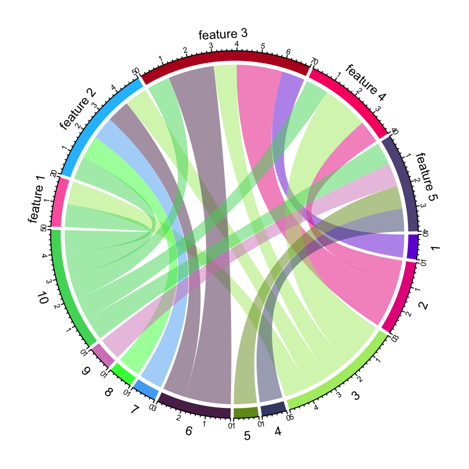

I haven’t written anything to this blog during 2016. So one of my New Year’s resolutions will be to start recording my work updates and personal thoughts here. I have also updated this blog to blogdown, so now I will be able to easily share my R wisdom with you. Here is what I will be able to plot and deploy in the blink of an eye!
